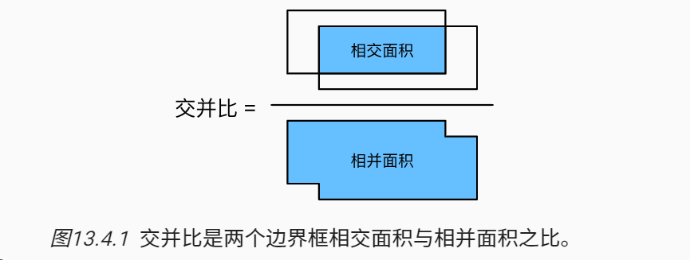
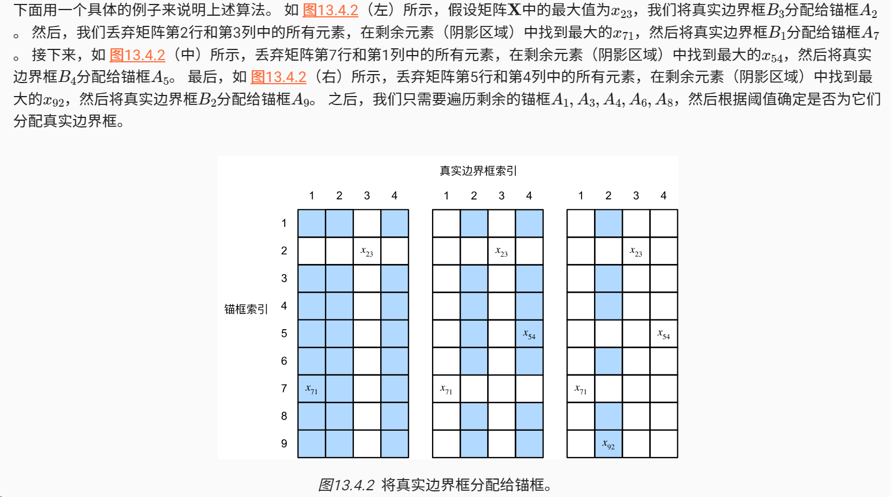
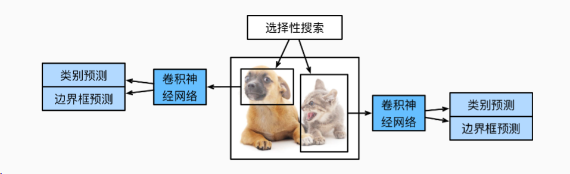
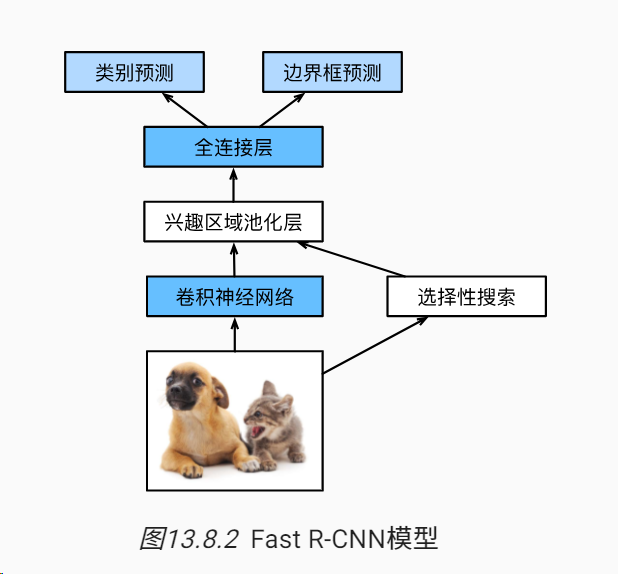
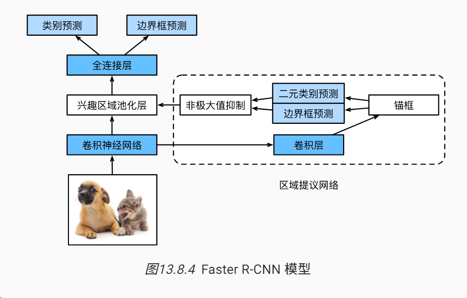
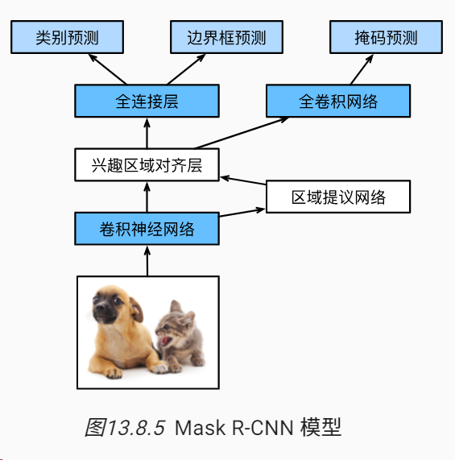
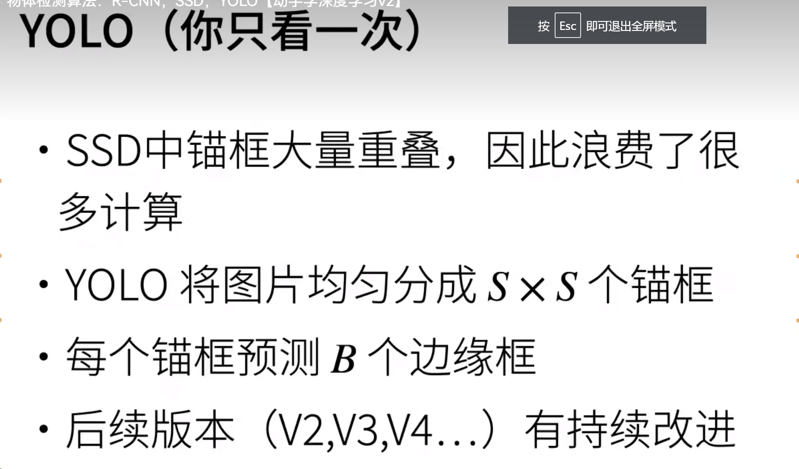

目标检测初探
0 目标检测算法
在图像分类任务中，我们假设图像中只有一个主要物体对象，我们只关注如何识别其类别。 然而，很多时候图像里有多个我们感兴趣的目标，我们不仅想知道它们的类别，还想得到它们在图像中的具体位置。 在计算机视觉里，我们将这类任务称为目标检测（object detection）或目标识别（object recognition）。
1 基本概念
1.1 锚框和边缘框
目标检测算法通常会在输入图像中采样大量的区域，然后判断这些区域中是否包含我们感兴趣的目标，并调整区域边界从而更准确地预测目标的真实边界框（ground-truth bounding box）。 不同的模型使用的区域采样方法可能不同。 这里我们介绍其中的一种方法：以每个像素为中心，生成多个缩放比和宽高比（aspect ratio）不同的边界框。 这些边界框被称为锚框（anchor box）。
在目标检测中，我们通常使用边界框（bounding box）来描述对象的空间位置。 边界框是矩形的，由矩形左上角的以及右下角的x和y坐标决定。 另一种常用的边界框表示方法是边界框中心的(x,y)轴坐标以及框的宽度和高度。
直白点：锚框是预测物体的位置，边缘框是物体实际的位置，都是用长方形进行框住。坐标有常见的表示方式，比如：左上角坐标和右下角坐标、左上角坐标和高宽、中间坐标和高宽等。
1.2 交并比 （IOU）
我们刚刚提到某个锚框“较好地”覆盖了图像中的狗。 如果已知目标的真实边界框，那么这里的“好”该如何如何量化呢？ 直观地说，可以衡量锚框和真实边界框之间的相似性。 杰卡德系数（Jaccard）可以衡量两组之间的相似性。 给定集合A和B，他们的杰卡德系数是他们交集的大小除以他们并集的大小：

1.3 训练数据中标注锚框

1.4 非极大抑制
当有许多锚框时，可能会输出许多相似的具有明显重叠的预测边界框，都围绕着同一目标。 为了简化输出，我们可以使用非极大值抑制（non-maximum suppression，NMS）合并属于同一目标的类似的预测边界框。
代码就看李沐的。
2 R-CNN（区域卷积神经网络）
- 对输入图像使用选择性搜索来选取多个高质量的提议区域 (Uijlings et al., 2013)。这些提议区域通常是在多个尺度下选取的，并具有不同的形状和大小。每个提议区域都将被标注类别和真实边界框；
- 选择一个预训练的卷积神经网络，并将其在输出层之前截断。将每个提议区域变形为网络需要的输入尺寸，并通过前向传播输出抽取的提议区域特征；
- 将每个提议区域的特征连同其标注的类别作为一个样本。训练多个支持向量机对目标分类，其中每个支持向量机用来判断样本是否属于某一个类别；
- 将每个提议区域的特征连同其标注的边界框作为一个样本，训练线性回归模型来预测真实边界框。
尽管R-CNN模型通过预训练的卷积神经网络有效地抽取了图像特征，但它的速度很慢。 想象一下，我们可能从一张图像中选出上千个提议区域，这需要上千次的卷积神经网络的前向传播来执行目标检测。 这种庞大的计算量使得R-CNN在现实世界中难以被广泛应用。

3 Fast Rcnn
R-CNN的主要性能瓶颈在于，对每个提议区域，卷积神经网络的前向传播是独立的，而没有共享计算。 由于这些区域通常有重叠，独立的特征抽取会导致重复的计算。 Fast R-CNN (Girshick, 2015)对R-CNN的主要改进之一，是仅在整张图象上执行卷积神经网络的前向传播。

- 与R-CNN相比，Fast R-CNN用来提取特征的卷积神经网络的输入是整个图像，而不是各个提议区域。此外，这个网络通常会参与训练。设输入为一张图像，将卷积神经网络的输出的形状记为(1 c h_1 w_1)；
- 假设选择性搜索生成了(n)个提议区域。这些形状各异的提议区域在卷积神经网络的输出上分别标出了形状各异的兴趣区域。然后，这些感兴趣的区域需要进一步抽取出形状相同的特征（比如指定高度(h_2)和宽度(w_2)），以便于连结后输出。为了实现这一目标，Fast R-CNN引入了兴趣区域汇聚层（RoI pooling）：将卷积神经网络的输出和提议区域作为输入，输出连结后的各个提议区域抽取的特征，形状为(n c h_2 w_2)；
- 通过全连接层将输出形状变换为(n d)，其中超参数(d)取决于模型设计；
- 预测(n)个提议区域中每个区域的类别和边界框。更具体地说，在预测类别和边界框时，将全连接层的输出分别转换为形状为(n q)（(q)是类别的数量）的输出和形状为(n )的输出。其中预测类别时使用softmax回归。
4 Faster R-CNN
为了较精确地检测目标结果，Fast R-CNN模型通常需要在选择性搜索中生成大量的提议区域。 Faster R-CNN (Ren et al., 2015)提出将选择性搜索替换为区域提议网络（region proposal network），从而减少提议区域的生成数量，并保证目标检测的精度。

- 使用填充为1的(3)的卷积层变换卷积神经网络的输出，并将输出通道数记为(c)。这样，卷积神经网络为图像抽取的特征图中的每个单元均得到一个长度为(c)的新特征。
- 以特征图的每个像素为中心，生成多个不同大小和宽高比的锚框并标注它们。
- 使用锚框中心单元长度为(c)的特征，分别预测该锚框的二元类别（含目标还是背景）和边界框。
- 使用非极大值抑制，从预测类别为目标的预测边界框中移除相似的结果。最终输出的预测边界框即是兴趣区域汇聚层所需的提议区域。
值得一提的是，区域提议网络作为Faster R-CNN模型的一部分，是和整个模型一起训练得到的。 换句话说，Faster R-CNN的目标函数不仅包括目标检测中的类别和边界框预测，还包括区域提议网络中锚框的二元类别和边界框预测。 作为端到端训练的结果，区域提议网络能够学习到如何生成高质量的提议区域，从而在减少了从数据中学习的提议区域的数量的情况下，仍保持目标检测的精度。
5 Mask R-CNN

如果在训练集中还标注了每个目标在图像上的像素级位置，那么Mask R-CNN (He et al., 2017)能够有效地利用这些详尽的标注信息进一步提升目标检测的精度。如 图13.8.5所示，Mask R-CNN是基于Faster R-CNN修改而来的。 具体来说，Mask R-CNN将兴趣区域汇聚层替换为了 兴趣区域对齐层，使用双线性插值（bilinear interpolation）来保留特征图上的空间信息，从而更适于像素级预测。 兴趣区域对齐层的输出包含了所有与兴趣区域的形状相同的特征图。 它们不仅被用于预测每个兴趣区域的类别和边界框，还通过额外的全卷积网络预测目标的像素级位置。 本章的后续章节将更详细地介绍如何使用全卷积网络预测图像中像素级的语义。
5 YOLO

比如yolov1就是分成了7*7个锚框，然后预测2个边缘框。只看一次，因为前面的所有方法都有大量的重叠，yolo尽量不重叠，所以它分出来的几乎不重叠。预测两个边缘框是因为有的框可能包含两个物体。
6 SSD

我对ssd的理解就是逐层取提特征，提取完特征加锚框，感受野会更大。
7 SSD实现
见李沐的课或者我的仓库，实验是检测出图片中的香蕉，实验结果如图。